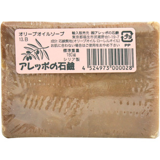

返回列表
产品名称：アレッポの石鹸 極上

アレッポの石鹸 アレッポの石鹸 極上 ＿
メーカー アレッポの石鹸
JANコード 4524973000028
商品の特徴
○オリーブオイルソープ
○シリア製
- 成分・分量
- ＜成分＞
石鹸素地（オリーブオイル ローレルオイル）
- 用法及び用量
- (1)通常の石鹸の使用方法でお使いいただけます。
(2)敏感肌の方はお肌に石鹸を塗って洗い流していただくだけで結構です。
(3)洗髪の方法は、石鹸を頭髪に滑らすように回してみてください。きめ細かな泡が立ってきますので、頭皮を指先でマッサージし、丁寧にすすいでください。
(4)洗髪後はリンスなしでも結構ですが、きしんだりパサついたりする様なら、石鹸シャンプー用のリンス、もしくはお酢やクエン酸などをご使用いただくとよりさらさらになります。